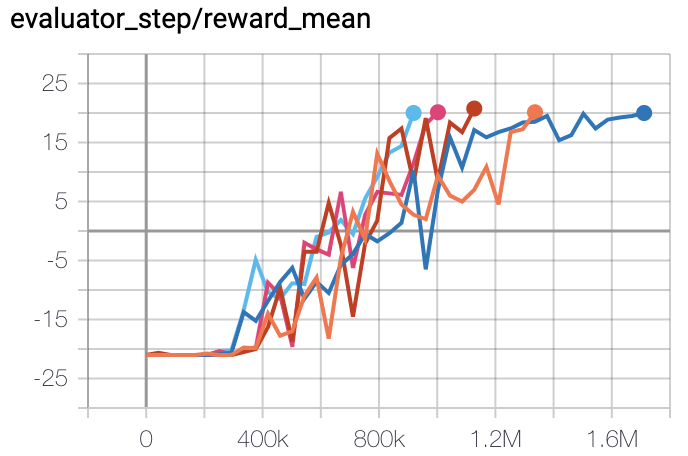
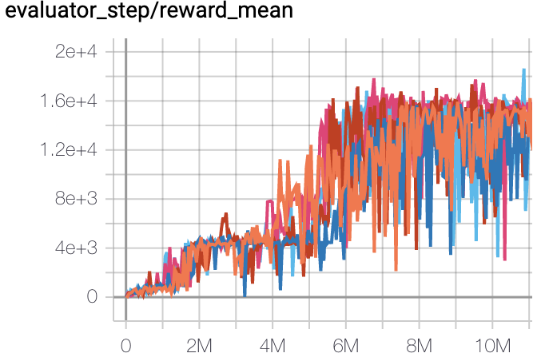
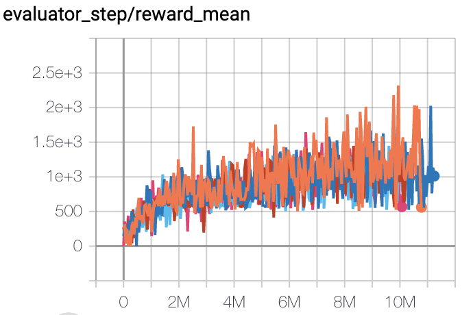

QRDQN¶
Overview¶
QR (Quantile Regression) DQN was proposed in Distributional Reinforcement Learning with Quantile Regression and inherits the idea of learning the distribution of a q-value. Instead of approximate the distribution density function with discrete atoms, QRDQN, directly regresses a discrete set of quantiles of a q-value.
Quick Facts¶
QRDQN is a model-free and value-based RL algorithm.
QRDQN only support discrete action spaces.
QRDQN is an off-policy algorithm.
Usually, QRDQN use eps-greedy or multinomial sample for exploration.
QRDQN can be equipped with RNN.
Key Equations or Key Graphs¶
C51 uses N fixed locations for its approximation distribution and adjusts their probabilities, while QRDQN assigns fixed, uniform probabilities to N adjustable locations. Based on this, QRDQN uses quantile regression to stochastically adjust the distributions’ locations so as to minimize the Wasserstein distance to a target distribution.
The quantile regression loss, for a quantile \(\tau \in [0, 1]\), is an asymmetric convex loss function that penalizes overestimation errors with weight \(\tau\) and underestimation errors with weight \(1−\tau\). For a distribution \(Z\), and a given quantile \(\tau\), the value of the quantile function \(F_Z^{−1}(\tau)\) may be characterized as the minimizer of the quantile regression loss:
And the above mentioned loss is not smooth at zero, which can limit performance when using non-linear function approximation. Therefore, a modified quantile loss, called quantile huber loss is applied during the Bellman update of QRDQN (i.e. the equation 10 in the following pseudo-code).
Where \(L_{\kappa}\) is Huber Loss.
Note
Compared with DQN, QRDQN has these differences:
Neural network architecture, the output layer of QRDQN is of size M x N, where M is the size of discrete action space and N is a hyper-parameter giving the number of quantile targets.
Replace DQN loss with the quantile huber loss.
In original QRDQN paper, replace RMSProp optimizer with Adam. While in DI-engine, we always use Adam optimizer.
Pseudo-code¶

Extensions¶
QRDQN can be combined with:
PER (Prioritized Experience Replay)
Multi-step TD-loss
Double (target) network
RNN
Implementation¶
Tip
Our benchmark result of QRDQN uses the same hyper-parameters as DQN except the QRDQN’s exclusive hyper-parameter, the number of quantiles, which is empirically set as 32.
The default config of QRDQN is defined as follows:
- class ding.policy.qrdqn.QRDQNPolicy(cfg: dict, model: Optional[Union[type, torch.nn.modules.module.Module]] = None, enable_field: Optional[List[str]] = None)[source]
- Overview:
Policy class of QRDQN algorithm.
- Config:
ID
Symbol
Type
Default Value
Description
Other(Shape)
1
typestr
qrdqn
RL policy register name, refer toregistryPOLICY_REGISTRYthis arg is optional,a placeholder2
cudabool
False
Whether to use cuda for networkthis arg can be diff-erent from modes3
on_policybool
False
Whether the RL algorithm is on-policyor off-policy4
prioritybool
True
Whether use priority(PER)priority sample,update priority6
other.eps.startfloat
0.05
Start value for epsilon decay. It’ssmall because rainbow use noisy net.7
other.eps.endfloat
0.05
End value for epsilon decay.8
discount_factorfloat
0.97, [0.95, 0.999]
Reward’s future discount factor, aka.gammamay be 1 when sparsereward env9
nstepint
3, [3, 5]
N-step reward discount sum for targetq_value estimation10
learn.updateper_collectint
3
How many updates(iterations) to trainafter collector’s one collection. Onlyvalid in serial trainingthis args can be varyfrom envs. Bigger valmeans more off-policy11
learn.kappafloat
/
Threshold of Huber loss
The network interface QRDQN used is defined as follows:
- class ding.model.template.q_learning.QRDQN(obs_shape: Union[int, ding.utils.type_helper.SequenceType], action_shape: Union[int, ding.utils.type_helper.SequenceType], encoder_hidden_size_list: ding.utils.type_helper.SequenceType = [128, 128, 64], head_hidden_size: Optional[int] = None, head_layer_num: int = 1, num_quantiles: int = 32, activation: Optional[torch.nn.modules.module.Module] = ReLU(), norm_type: Optional[str] = None)[source]
- forward(x: torch.Tensor) Dict[source]
- Overview:
Use observation tensor to predict QRDQN’s output. Parameter updates with QRDQN’s MLPs forward setup.
- Arguments:
- x (
torch.Tensor): The encoded embedding tensor with
(B, N=hidden_size).
- x (
- Returns:
- outputs (
Dict): Run with encoder and head. Return the result prediction dictionary.
- outputs (
- ReturnsKeys:
logit (
torch.Tensor): Logit tensor with same size as inputx.q (
torch.Tensor): Q valye tensor tensor of size(B, N, num_quantiles)tau (
torch.Tensor): tau tensor of size(B, N, 1)
- Shapes:
x (
torch.Tensor): \((B, N)\), where B is batch size and N is head_hidden_size.logit (
torch.FloatTensor): \((B, M)\), where M is action_shape.tau (
torch.Tensor): \((B, M, 1)\)
- Examples:
>>> model = QRDQN(64, 64) >>> inputs = torch.randn(4, 64) >>> outputs = model(inputs) >>> assert isinstance(outputs, dict) >>> assert outputs['logit'].shape == torch.Size([4, 64]) >>> # default num_quantiles : int = 32 >>> assert outputs['q'].shape == torch.Size([4, 64, 32]) >>> assert outputs['tau'].shape == torch.Size([4, 32, 1])
The bellman updates of QRDQN is implemented in the function qrdqn_nstep_td_error of ding/rl_utils/td.py.
Benchmark¶
environment |
best mean reward |
evaluation results |
config link |
comparison |
|---|---|---|---|---|
Pong
(PongNoFrameskip-v4)
|
20 |
 | Tianshou (20)
|
|
Qbert
(QbertNoFrameskip-v4)
|
18306 |
 | Tianshou (14990)
|
|
SpaceInvaders
(SpaceInvadersNoFrame skip-v4)
|
2231 |
 | Tianshou (938)
|
P.S.：
The above results are obtained by running the same configuration on five different random seeds (0, 1, 2, 3, 4)
For the discrete action space algorithm like QRDQN, the Atari environment set is generally used for testing (including sub-environments Pong), and Atari environment is generally evaluated by the highest mean reward training 10M
env_step. For more details about Atari, please refer to Atari Env Tutorial .
References¶
(QRDQN) Will Dabney, Mark Rowland, Marc G. Bellemare, Rémi Munos: “Distributional Reinforcement Learning with Quantile Regression”, 2017; arXiv:1710.10044. https://arxiv.org/pdf/1710.10044